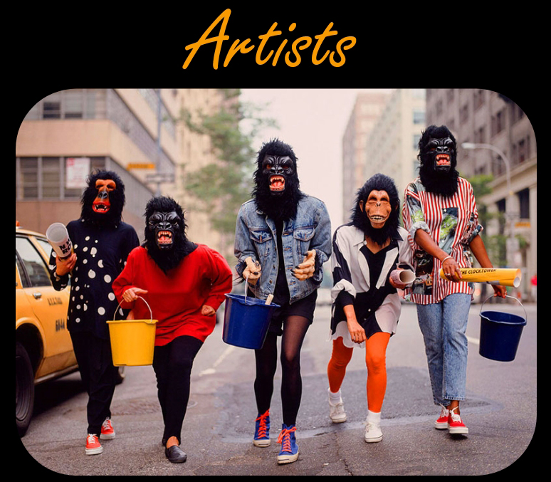
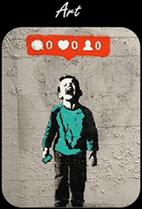
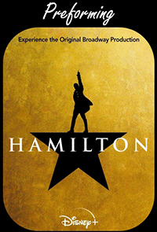
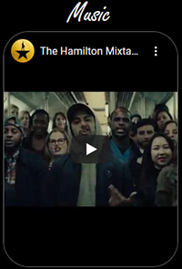

Guerilla Girls: "[F]eminist activist artists"
There are many artists who work with different forms of art to promote, educate, and inspire others. Artists like the Guerilla Girls (above) who push for female equality in art galleries and museums, Banksy who uses his work to promote various issues and raise money for countless causes, and Lin-Manuel who uses preformance art on Broadway to educate and shed light on the importance of immigrants and the value of diversity in our nations history. There are countless others these are just a few art activist.
Click on the images and links for videos and web pages giving more in-depth information.

Banksy
Anonymous Street Artist
His work is known to bring awareness to political issues, he raises money for the blind, is an animal activist, and donates to countless causes.

Lin-Manuel Miranda
Hamilton: An American Musical
Lin-Manuel wrote Hamilton to tell an "immigrants story" after reading an Alexander Hamilton biography. He has also used his skills to help support the BLM movement, to raise money for Puerto Rico, and support and create opportunities for minorities.

Immigrants (We Get the Job Done)
by K'naan ft. Residente, Riz MC and Snow Tha Product
Each artist on this song has used their artistic talents and platforms to advocate for diversity and the arts. They have each taken a stand on lack of representation and misrepresentation of their respective cultures.